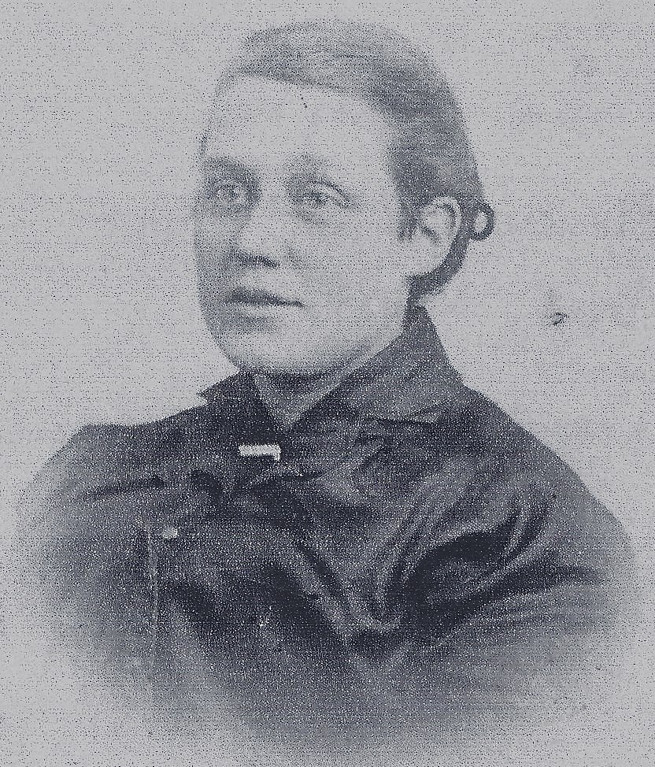
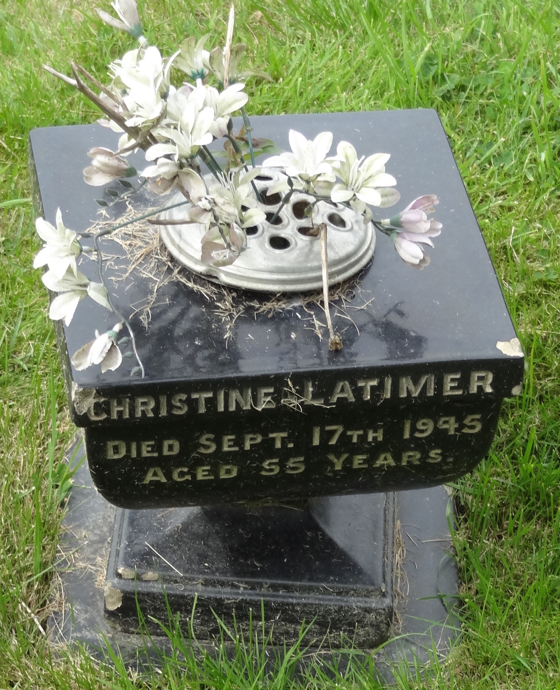

Christina Robertson Latimer (née Myers) cMay 1890 - 1945
[ Home ] | [ Calendar ] | [ Surnames Index ] | [ Census Index ] | [ Family History ]The child of Henry Myers (a steamboat man) and Martha Adamson, Christina Myers was born in North Shields, Tyne and Wear, England c. May 18901,2,3,4,5,6. She was married twice - to Peter Nimmo (in 1909) Robert Latimer (in 1918).
During her life, she was living at Appleby Street in North Shields on Apr 5, 18911 and on Mar 31, 19012.
She died on Sep 17, 1945 in North Shields6 and was buried at Holy Cross Cemetery, Wallsend, Tyne and Wear, England after Sep 17, 1945.
Parents
- Henry Briscoe Nicholson was born c. Feb 1856
- Martha Sarah was born on Mar 22, 1855
Citations
- 1891 England, Wales & Scotland Census - Findmypast (was age 1 and the daughter of the head of the household)
- 1901 England, Wales & Scotland Census - Findmypast (was age 10 and the daughter of the head of the household)
- ngdom, England;
- ingdom, England;
- Volume: 10B; Page: 209; Line Number: 103; Record set: England & Wales Births 1837-2006; Subcategory: Civil Births; Category: Birth, Marriage & Death (Parish Registers); Collections from: United Kingdom, England;
- England & Wales deaths 1837-2007 - Findmypast
Media
Christina Robertson Myers

Christina Robertson Myers - gravestone

England & Wales births 1837-2006 - BMD/B/1890/2/AZ/000400/103
Family Trees - FMP/1311878309
England & Wales deaths 1837-2007 - BMD/D/1945/3/AZ/000484/072
Family Tree

Generated by ged2site. Last updated on Jun 11, 2024